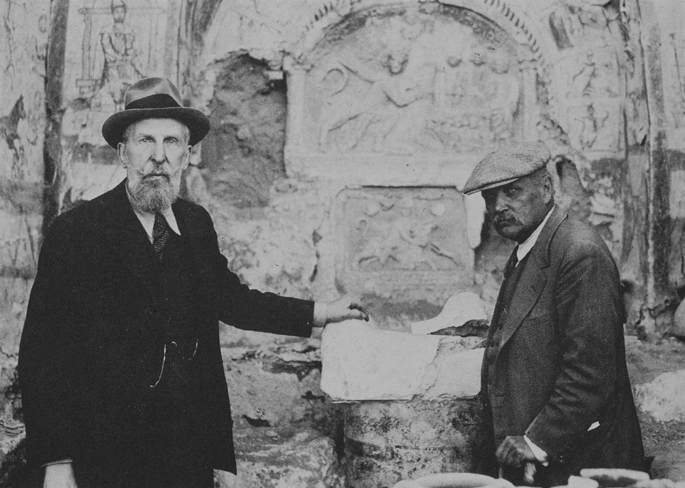

The images used to model and annotate this project were primarily based off of objects currently stored at the Yale University Art Gallery, excavated by the Yale-French Excavations at Dura Europos.
Led in large part by Henry Pearson, found the shrine of this mithraeum almost entirely intact. Pearson’s three stages of construction of the Mithraeum were called the Early Mithraeum (EM), Middle Mithraeum (MM), and Late Mithraeum (LM). What is on display at the Yale University Art Gallery is a part of the Late Mithraeum known as the shrine. As mentioned, this three stage interpretation comes from—and has been subsequently published and canonized—Henry Pearson and Mikhail Rostotzeff, with the three stages loosely defined here:
Early Mithraeum: this stage of construction centered around the shrine, which was at the time housed in a private home, instead of a building built for worship. Made up of a single room, the space opens off of a courtyard, with benches on either side of it. Importantly, Pearson’s interpretation asserts that there is no significant decoration such as the plaster paintings traditional to the Mithraeum in place during the EM.
Middle Mithraeum: this stage included an expansion of the EM into its own building, with a new entrance, space of worship (specifically the benches) expanded from the original room. Notably, an arch framing the cult image and elaborate paintings decorated the walls of the Middle Mithraeum.
Late Mithraeum: this stage primarily included an expansion of the functional elements erected during the MM, including an earlier staircase, altars, and an expansion of the ceiling. These new constructions partially covered some of the painting from the MM, and some reliefs were re-set because of this. There is also evidence of an overall new decorative program assigned to this stage.
On the other hand, Dirvin and McCarthy propose thinking of the phases in the phases of Mithraeum I (loosely EM and MM) and Mithraeum II (LM), with a shifted timeline that does not exactly follow the years that Pearson ascribed to the different stages. They argue for a re-interpretation that evaluates a more complex and less delineated history of the Mithraeum, and one that accounts for the impact that earlier versions and decorative programs of the building might have had on later constructions. This type of delineation, as formerly mentioned, does not allow for a cross-temporal analysis of the decoration and fragments excavated from the Mithraeum that Dirvin and McCarthy suggests. This project then aims to visualize objects from the Mithraeum and its shrine categorized by stage in order to see how the shrine and building evolved in Dura Europos. However, both Pearson’s and Dirvin and McCarthy’s interpretations are taken into account in our project, as we acknowledge both the EM, MM, and EM, as well as Mithraeum I and II in order to give a full picture of both interpretations.
3-dimensional model of the mithraeum on view at the Yale University Art Gallery (a reconstruction of the Late Mithraeum)
Two beardless figures with Phrygian caps
Description: A narrative scene in addition to the banquet (paint on plaster)
Possible location in Mithraeum: This narrative cycle was most likely set around the arch.
Another head of Sol
Description: A narrative scene in addition to the banquet. A head in three-quarter view in the same style with the same dimensions. (paint on plaster)
Possible location in Mithraeum: This narrative cycle was most likely set around the arch.
A large fragment with Parthian clothing
Description: Fragment is 0.32 x 0.42 and probably is the lower part of the tunic. If correct, the height of this figure was about 1.00m. (paint on plaster)
Possible location in Mithraeum: This narrative cycle was most likely set around the arch.
A fragment of a bull's head
Description: A narrative scene in addition to the banquet. Pearson identifies the bull as belonging to the tauroctony above the arch, but the fragment suggests the animal faced frontally, which is highly unusual for a bull-killing scene. (paint on plaster)
Possible location in Mithraeum: This narrative cycle was most likely set around the arch.
Two fragmentary clean-shaven portraits
Description: These two portraits wearing Phrygian caps, now in storage at Yale, possibly belonged to this scene as well. They are painted in the same style as the narrative cycle surrounding the arch. The iconography suggests we are dealing with representations of Mithras or, more plausibly (since they are two near-identical portraits), the two torch bearers. According to Pearson, the central group was flanked on either side by at least one tree. (paint on plaster)
Possible location in Mithraeum: This narrative cycle was most likely set around the arch.
A crouching figure
Description:A crouching figure wearing tunic and trousers, above which are the feet of two other figures. (paint on plaster)
Possible location in Mithraeum: This narrative cycle was most likely set around the arch.
A fragment with the same dimensions as the scenes from the final phase
Description: This was painted in a style deviating from both the earliest and the last cycle. (paint on plaster)
Possible location in Mithraeum: This narrative cycle was most likely set around the arch.
Faint remains of five signs of the zodiac (no image/model)
Description: Pisces was the only recognizable one. The border of this series was yellow, the background blue, and the figures were in red and white. (paint on plaster)
Possible location in Mithraeum: Inside the cult niche, around the two bas-reliefs.
A reclining figure whose head was projecting into the border of the panel
Description: The scene is similar to the so-called sleeping Kronos from the last cycle. (paint on plaster)
Possible location in Mithraeum: On the left side of the niche, next to the bottom.
Several painted stucco fragments
Description: They display various styles that with one possible exception do not tally with the style of the paintings around the niche. Pearson writes about portraits of donors, some of which are identified by inscriptions, whereas on p. 104 he mentions three portraits of about the same large scale. It is not clear whether these are the donor portraits or different portraits. (paint on plaster)
Possible location in Mithraeum: In the nave.
Fragments of the portraits of Mithraic initiates: Head of Donor with Head at Right: Archelaus
Description: Several painted stucco fragments with a motif in red and black. (paint on plaster)
Possible location in Mithraeum: Attached to the larger cult relief.